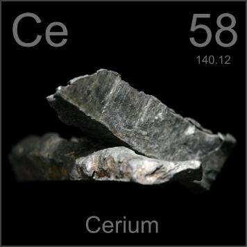

HOME
PREVIOUS
NEXT

Cerium
Atomic Weight: 140.116
Density: 6.689 g/cm3
Melting Point: 798 °C
Boiling Point: 3360 °C
Cerium is one of the least expensive rare earths and is the major component of "mischmetal", used in lighter flints because it catches fire easily when struck. Larger blocks are used for sparking special effects.
s